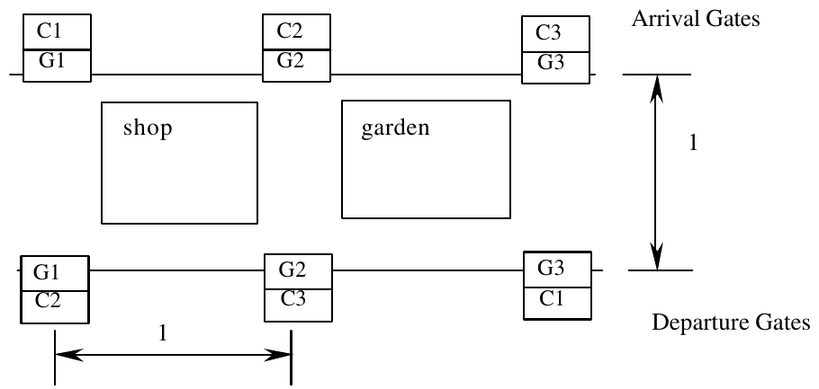

25th Annual ACM ICPC World Finals · Problem A
ACM Airlines is a regional airline with von Neumann Airport as its home port. For many passengers, von Neumann Airport is not the start of their trip, nor their final destination, so many transfer passengers pass through the airport.
The von Neumann Airport has a corridor layout. Arrival gates are located, equally spaced, at the north side of the corridor. Departure gates are at the south side of the corridor, equally spaced as well. The distance between two adjacent gates equals the width of the corridor. Each arrival gate is assigned to exactly one city, and the same holds for the departure gates. Passengers arrive at the arrival gate assigned to their city of origin and exit the terminal or proceed to a connecting flight at a gate assigned to their destination city. For this problem, only passengers with connecting flights are considered.
Transferring passengers generate a lot of traffic in the corridor. The average number of people traveling between cities is known beforehand. Using this information, it should be possible to reduce the traffic. If transfers from city Cx to city Cy occur very frequently, it may help to locate the gates assigned to these cities near or even directly opposite each other.
Due to the presence of shops and gardens it is not possible to cross the corridor diagonally, so the distance between arriving gate G1 and departing gate G3 (see diagram) equals 1 + 2 = 3.
You must assess total traffic load for several different configurations. The traffic load between an origin and destination gate is defined as the number of origin to destination passengers multiplied by the distance between the arriving and departing gate. The total traffic load is the sum of the traffic loads for all origin-destination pairs.

The input file contains several test cases. The last test case in the input file is followed by a line containing the number 0.
Each test case has two parts: first the traffic data, then the configuration section.
The traffic data starts with an integer N (1 < N < 25), representing the number of cities. The following N lines each represent traffic data for one city. Each line with traffic data begins with an integer in the range 1..N identifying the city of origin. This is followed by k pairs of integers, one pair for every destination city. Each pair identifies the destination city and the number of passengers (at most 500) traveling from the city of origin to this destination city.
The configuration section consists of one or more (at most 20) configurations and ends with a line containing the number 0.
A configuration consists of 3 lines. The first line contains a positive number identifying the configuration. The next line contains a permutation of the cities, as they are assigned to the arrival gates: the first number represents the city assigned to the first gate, and so on. The next line in the same way represents the cities as they are assigned to the departure gates.
For each test case, the output contains a table presenting the configuration numbers and total traffic load, in ascending order of traffic load. If two configurations have the same traffic load, the one with the lowest configuration number should go first. Follow the output format shown in the sample below.
3 1 2 2 10 3 15 2 1 3 10 3 2 1 12 2 20 1 1 2 3 2 3 1 2 2 3 1 3 2 1 0 2 1 1 2 100 2 1 1 200 1 1 2 1 2 2 1 2 2 1 0 0
Configuration Load
2 119
1 122
Configuration Load
2 300
1 600